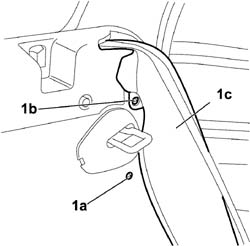
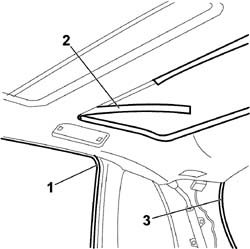
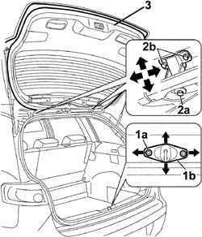

7015A14 TAILGATE - ADJUST CENTRING AND PROFILE - INCLUDES HINGE AND COMPARTMENT SEAL ADAPTATION
- Path
- Procedures > 70 FITTINGS > 7015 TAILGATE/FLAP > 7015A TAILGATE ASSEMBLY > 7015A14 TAILGATE - ADJUST CENTRING AND PROFILE - INCLUDES HINGE AND COMPARTMENT SEAL ADAPTATION
- Kind
- repair procedure (removal / refitting; the operation number is the code)
- Applies to
- all engines; all production periods
- Interactive page
- https://sloeber94.github.io/elrnDB-fCrm/en/#/194000943
Applies to: all engines; all production periods
- Turn the ignition key to the OFF position.
- Disconnect the negative battery terminal.
Description | Connector | |
|---|---|---|
BATTERY |
Op. 7015A10 TAILGATE - ADJUST STRIKER AND ADAPT SEAL IF NECESSARY
- If the adjustments indicated previously are not sufficient, adjust the position of the tailgate hinges as follows:
Op. 7040B42 PROTECTION GRILLE FOR ANIMAL TRANSPORT - R and R
Op. 7040B26 LOAD PLATFORM COVER BLIND - R+R
- Lower the rear seat backrest.
1. Working from both sides, unscrew bolts (1a) and (1b) and disconnect side panels (1c) from the rear seats carefully without disconnecting the side bag module electrical connections.

Applies to: all engines; all production periods
(Both)
Op. 7040H42 REAR PILLAR TRIM (ONE), LEFT OR RIGHT- R.R
(Both)
Op. 7040H50 REAR PANEL (ONE), LEFT OR RIGHT - R.R
Op. 7040E46 REAR COURTESY LIGHT ASSEMBLY - R R
(Both)
Op. 7040B44 PROTECTIVE GRILL ATTACHMENT ONE R R
(Both)
Op. 7065C30 GRAB HANDLE (ONE) LEFT, RIGHT OR CENTRE PASSENGER COMPARTMENT INTERIOR - R.R
1. Working on both sides, partly prise up the upper part of the rear door compartment seal.
2. Prise up and remove the rear sunroof decorative trim.
3. Partly prise up the upper part of the tailgate compartment seal.
- Carefully lower the rear part of the roof trim to gain access to the hinge screws.

Applies to: all engines; all production periods
1. Loosen the bolts (1a) fixing the tailgate striker (1b).
2. Loosen tailgate bolts (2a) and (2b), taking care not to damage the roof trim.
3. Adjust the position of the tailgate, checking the alignment with the outer profile.
- Check that the striker is perfectly matched with the tailgate lock.
- When the adjustment has been completed, tighten the bolts fixing the hinges and the lock striker to torque.
(2a)
Component | Fastening | dia | Value (daNm) | Validity |
|---|---|---|---|---|
TAILGATE HINGES TO BODYSHELL | Bolt | M6 | 2,25 ÷ 2,75 |

Applies to: all engines; all production periods
- Fit the upper part of the tailgate compartment seal.
- Position and fit the rear sunroof decorative trim.
- Working on both sides of the vehicle, partly prise up the upper part of the rear door compartment seal.
(Both)
Op. 7065C30 GRAB HANDLE (ONE) LEFT, RIGHT OR CENTRE PASSENGER COMPARTMENT INTERIOR - R.R
(Both)
Op. 7040B44 PROTECTIVE GRILL ATTACHMENT ONE R R
Op. 7040E46 REAR COURTESY LIGHT ASSEMBLY - R R
(Both)
Op. 7040H50 REAR PANEL (ONE), LEFT OR RIGHT - R.R
(Both)
Op. 7040H42 REAR PILLAR TRIM (ONE), LEFT OR RIGHT- R.R
- Working on both sides, position the rear seat side panels and tighten the bolts.
Op. 7040B26 LOAD PLATFORM COVER BLIND - R+R
Op. 7040B42 PROTECTION GRILLE FOR ANIMAL TRANSPORT - R and R
- Connect the negative battery terminal.
Description | Connector | |
|---|---|---|
BATTERY |
Topics linked from this page (9)
- 7015A10 TAILGATE - ADJUST STRIKER AND ADAPT SEAL IF NECESSARY
- 7040B26 LOAD PLATFORM COVER BLIND - R+R
- 7040B42 <x>PROTECTION GRILLE FOR ANIMAL TRANSPORT - R&R</x>
- 7040B44 PROTECTIVE GRILL ATTACHMENT ONE R R
- 7040E46 REAR COURTESY LIGHT ASSEMBLY - R R
- 7040H42 REAR PILLAR TRIM (ONE), LEFT OR RIGHT- R.R
- 7040H50 REAR PANEL (ONE), LEFT OR RIGHT - R.R
- 7065C30 GRAB HANDLE (ONE) LEFT, RIGHT OR CENTRE PASSENGER COMPARTMENT INTERIOR - R.R
- A001 BATTERY